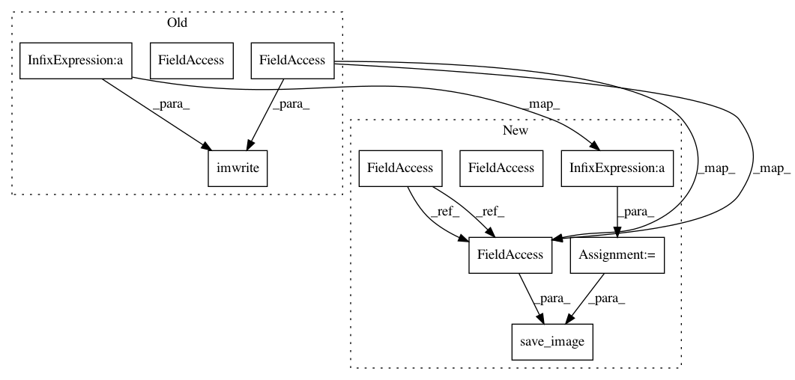

83d02d08feabaca88b65875318cb79a5e9e7b9c4,src/cnn_layer_visualization.py,CNNLayerVisualization,visualise_layer_with_hooks,#CNNLayerVisualization#,42
Before Change
self.created_image = recreate_image(self.processed_image)
// Save image
if i % 5 == 0:
cv2.imwrite("../generated/layer_vis_l" + str(self.selected_layer) +
"_f" + str(self.selected_filter) + "_iter"+str(i)+".jpg",
self.created_image)
def visualise_layer_without_hooks(self):
// Process image and return variable
self.processed_image = preprocess_image(self.created_image)
After Change
// Update image
optimizer.step()
// Recreate image
self.created_image = recreate_image(self.processed_image)
// Save image
if i % 5 == 0:
im_path = "../generated/layer_vis_l" + str(self.selected_layer) + \
"_f" + str(self.selected_filter) + "_iter" + str(i) + ".jpg"
save_image(self.created_image, im_path)
def visualise_layer_without_hooks(self):
// Process image and return variable
self.processed_image = preprocess_image(self.created_image)
In pattern: SUPERPATTERN
Frequency: 3
Non-data size: 10
Instances
Project Name: utkuozbulak/pytorch-cnn-visualizations
Commit Name: 83d02d08feabaca88b65875318cb79a5e9e7b9c4
Time: 2018-11-17
Author: utku.ozbulak@gmail.com
File Name: src/cnn_layer_visualization.py
Class Name: CNNLayerVisualization
Method Name: visualise_layer_with_hooks
Project Name: utkuozbulak/pytorch-cnn-visualizations
Commit Name: 83d02d08feabaca88b65875318cb79a5e9e7b9c4
Time: 2018-11-17
Author: utku.ozbulak@gmail.com
File Name: src/cnn_layer_visualization.py
Class Name: CNNLayerVisualization
Method Name: visualise_layer_without_hooks
Project Name: utkuozbulak/pytorch-cnn-visualizations
Commit Name: 83d02d08feabaca88b65875318cb79a5e9e7b9c4
Time: 2018-11-17
Author: utku.ozbulak@gmail.com
File Name: src/generate_class_specific_samples.py
Class Name: ClassSpecificImageGeneration
Method Name: generate